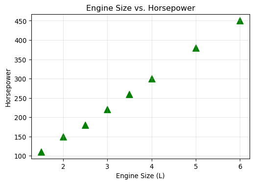

students = [
{'name': 'Alice', 'score': 85},
{'name': 'Bob', 'score': 72},
{'name': 'Charlie', 'score': 90},
{'name': 'Diana', 'score': 65}
]
# top_students = ???
# print(top_students)Numerical Programming with NumPy
Lab 01 (Python, NumPy, Pandas, Matplotlib)에서 다룬 연습 문제를 모았습니다.
Python Basics (Lab 01)
You are given a list of dictionaries representing a tiny dataset of students and their test scores. Write a list comprehension that extracts the names of students who scored higher than 80.
Solutions:
# Solution using list comprehension with a condition
top_students = [student['name'] for student in students if student['score'] > 80]
print("Students with score > 80:", top_students)Students with score > 80: ['Alice', 'Charlie']NumPy Basics (Lab 01)
Create a vector v and a matrix M with shape (4, 3) where every row of M is exactly v. (Hint: You can achieve this using np.tile or by utilizing broadcasting).
import numpy as np
v = np.array([1, 2, 3])
# M = ??? # Desired shape (4, 3), each row is [1, 2, 3]
# print(M)Solutions:
# Solution 1: Using np.tile
M1 = np.tile(v, (4, 1))
print("Using tile:\n", M1)
# Solution 2: Using broadcasting
# Adding a (3,) vector to a (4, 3) matrix of zeros automatically broadcasts it.
M2 = v + np.zeros((4, 3))
print("Using broadcasting:\n", M2)Using tile:
[[1 2 3]
[1 2 3]
[1 2 3]
[1 2 3]]
Using broadcasting:
[[1. 2. 3.]
[1. 2. 3.]
[1. 2. 3.]
[1. 2. 3.]]Pandas Basics (Lab 01)
You are given a small dataset of housing prices. Write pandas code to:
- Extract all houses with more than 2 bedrooms.
- Separate the filtered data into features (\(X\)) containing ‘Bedrooms’ and ‘SqFt’, and the target label (\(y\)) containing ‘Price’.
import pandas as pd
housing_data = {
'Bedrooms': [2, 3, 4, 2, 5],
'SqFt': [1200, 1800, 2400, 900, 3000],
'Price': [250000, 350000, 500000, 200000, 650000]
}
houses_df = pd.DataFrame(housing_data)
# 1. large_houses = ???
# 2. X = ???
# 2. y = ???
# print("X:\n", X)
# print("y:\n", y)Solutions:
# 1. Filter for houses with > 2 bedrooms
large_houses = houses_df[houses_df['Bedrooms'] > 2]
# 2. Extract X (features) and y (target)
X = large_houses[['Bedrooms', 'SqFt']]
y = large_houses['Price']
print("Features (X):\n", X)
print("\nTarget (y):\n", y)Features (X):
Bedrooms SqFt
1 3 1800
2 4 2400
4 5 3000
Target (y):
1 350000
2 500000
4 650000
Name: Price, dtype: int64Matplotlib Basics (Lab 01)
Using the numpy arrays provided below, create a scatter plot.
- Make the points green triangles (
marker='^'). - Add a title: “Engine Size vs. Horsepower”.
- Label the x-axis “Engine Size (L)” and the y-axis “Horsepower”.
import matplotlib.pyplot as plt
import numpy as np
engine_size = np.array([1.5, 2.0, 2.5, 3.0, 3.5, 4.0, 5.0, 6.0])
horsepower = np.array([110, 150, 180, 220, 260, 300, 380, 450])
# fig, ax = plt.subplots()
# Your plotting code here...
# plt.show()Solutions:
fig, ax = plt.subplots(figsize=(6, 4))
# 1. Plot green triangles
ax.scatter(engine_size, horsepower, color='green', marker='^', s=100) # s sets the marker size
# 2 & 3. Add titles and labels
ax.set_title("Engine Size vs. Horsepower")
ax.set_xlabel("Engine Size (L)")
ax.set_ylabel("Horsepower")
ax.grid(True, alpha=0.3)
plt.show()